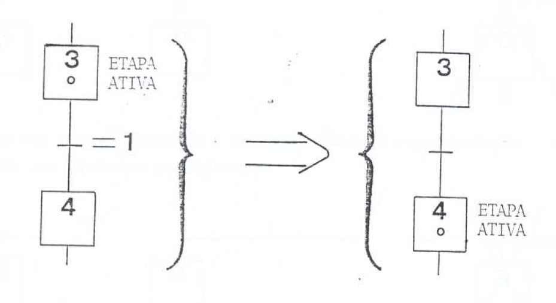
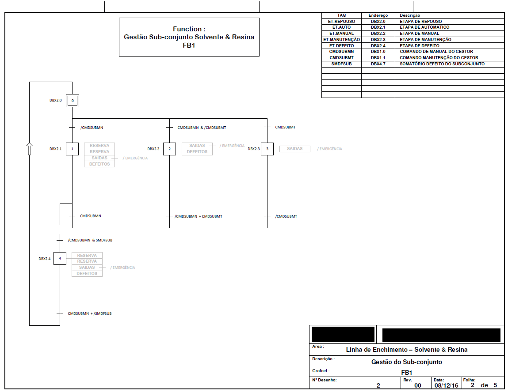
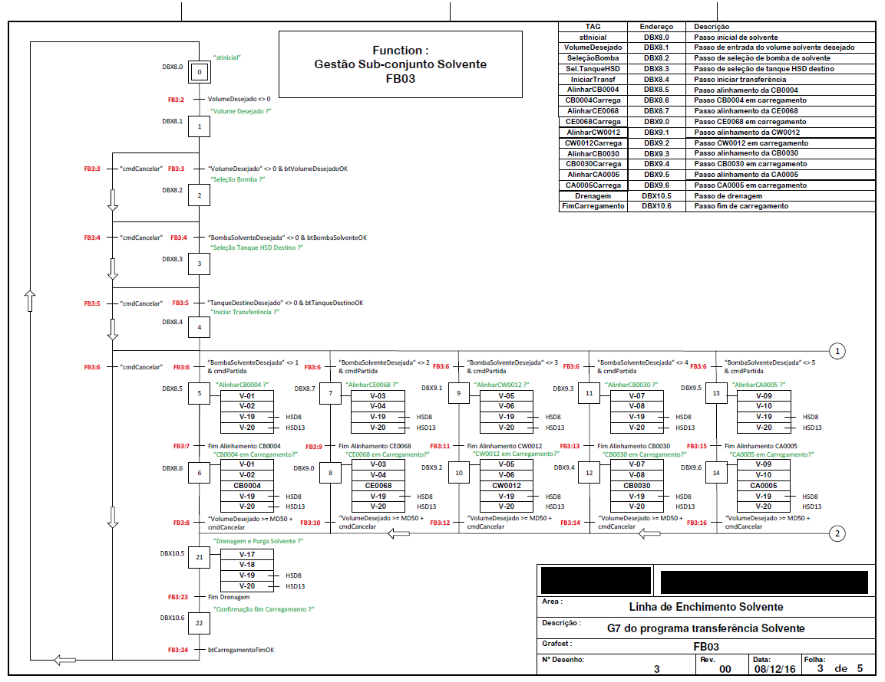
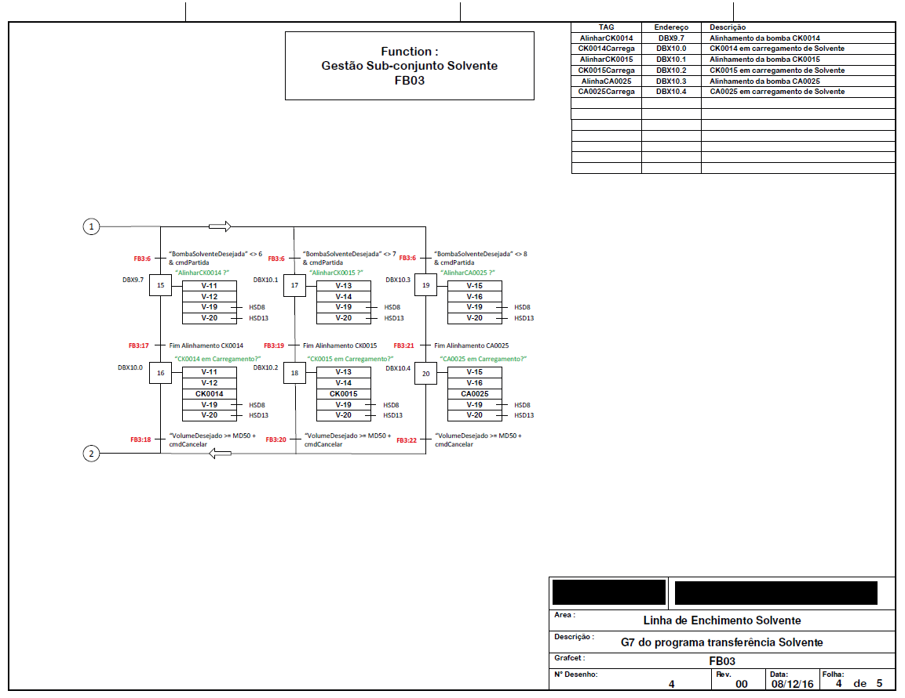
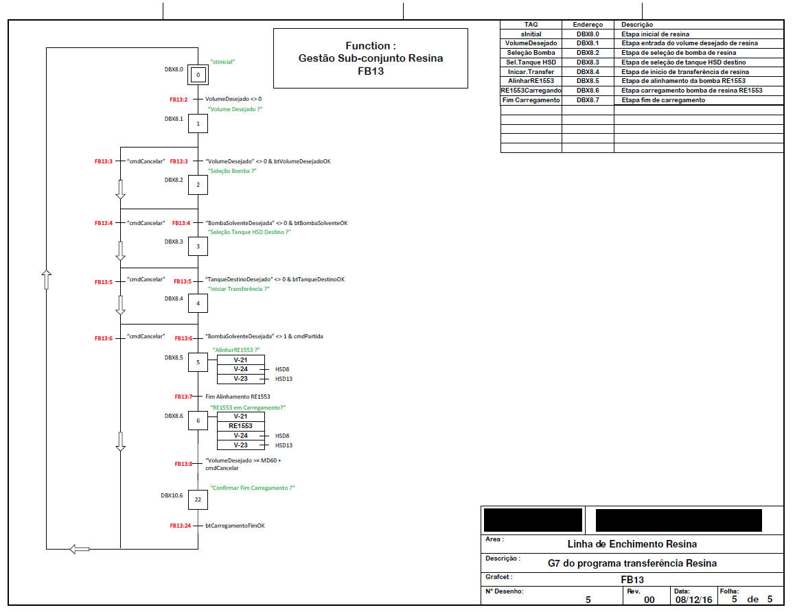

14 Introdução
Inicialmente, detalharemos um pouco da história, algumas partes da norma IEC 848, como simbologia, sua representação em LADDER ou STL, regras que recomenda-se obdecer para evitar erros na execução do programa. Detalharemos ainda, boas práticas de construção de programa.
Após este nivelamento, um projeto básico de uma planta de CIP será utilizado como proposta de desafio de construção do mesmo, seguindo as premissas apresentadas nesta parte II.
Importante ressaltar que os métodos de conversão de grafcet em seu equivalente LADDER ou STL aqui apresentados, não é a única forma de conversão. A linguagem STL do Siemens tem recursos suficientes para permitir a construção da lógica de diferentes formas.
Em Construção
14.1 História do GRAFCET
Em 1975, pesquisadores e gerentes industriais franceses envolvidos em sistemas de controle discreto se reuniram para comparar e avaliar modelos e métodos de construção de sistemas de controle sequencial. Eles compartilharam suas experiências com dezessete técnicas diferentes: alguns usavam questionários empíricos, outros modelos tecnológicos e outros modelos teóricos puros, derivados de “Máquinas de Estado” ou “Redes de Petri”.
Decidiram criar um modelo personalizado, chamado GRAFCET, que era mais simples e adequado para sistemas complexos, especialmente sistemas de manufatura. O nome deriva de Graph, pois o modelo tem uma base gráfica, e AFCET (Association Française Pour La Cybernétique Économique et Technique), a associação científica que financiou todo o trabalho.
Os conceitos básicos desse sistema de controle discreto eram claros e simples: a “etapa”, a “ação associada à etapa”, a “transição” e a condição associada à “transição”. A etapa representa um estado parcial do sistema em que uma ação é realizada. A etapa pode estar “ativa” ou “inativa” em um determinado momento. Para a transição de uma etapa para outra, a etapa anterior deve estar ativa e a condição de transição entre as duas etapas deve ser verdadeira.(FERREIRA 1995)
A transição, que “conecta” a etapa anterior (uma ou várias etapas) à etapa seguinte (uma ou várias etapas), representa uma decisão para mudar o estado do sistema (a ação da etapa anterior é seguida pela ação da etapa seguinte). Para efetuar uma transição, são necessárias duas condições: (SARQUIS ATTIÉ 1998)
- Todos os passos, cuja saída está ligada à entrada da transição, estejam ativados;
- a condição associada à transição for satisfeita.
Ao ser efetuada a transição, a etapa precedente (uma ou várias etapas) torna-se inativa e a etapa seguinte (uma ou várias etapas) torna-se ativa. Conseqüentemente, a ação associada à etapa precedente deixa de ser realizada, e a associada à etapa seguinte passa a ser realizada. Na figura abaixo, ilustra-se um exemplo da aplicação do GRAFCET para o acionamento de um motor.
Em 1988, a IEC (International Eletrotechnical Commission) adotou o GRAFCET como Norma Internacional, sob o nome inglês Sequencial Function Chart - SFC (Diagrama Funcional Sequencial). Esta norma foi intitulada “Preparation of Function Charts for Control Systems” (Preparação de Diagramas Funcionais para Sistemas de Controle), com a referência IEC 848. Recentemente, a referência foi alterada para IEC 60848.
Apesar de ter sido criada para aplicações eletrotécnicas, o GRAFCET pode ser aplicado em sistemas não elétricos, como hidráulicos, pneumáticos ou mecânicos. Ele descreve as funções de controle de um sistema, independentemente do campo de aplicação. O método de representação proposto atua como uma ‘ferramenta de comunicação’ entre as diferentes áreas envolvidas no desenvolvimento e uso de sistemas automatizados.
A linguagem GRAFCET facilita a comunicação entre profissionais de várias áreas envolvidas no processo de automação (ROMANO 2001). Os fabricantes de CLP adotam o GRAFCET como linguagem de programação. O GRAFCET não substitui o Ladder/STL na programação, mas facilita o programa, pois permite uma visualização lógica de todas as etapas de funcionamento da automação.
14.2 Diagrama funcional sequencial
Nas literaturas em português, o GRAFCET é conhecido pelo nome de Diagrama Funcional Seqüencial (GEORGINE 2000). A seguir, são apresentados os elementos e as regras definidas na Norma IEC 60848. Os elementos do Diagrama Funcional Seqüencial (SFC) são:
- etapas – associadas às ações.
- transições – associadas às condições.
- ligações orientadas – conectam as etapas às transições
Em Construção
14.3 Etapas
Uma etapa é um estado no qual o comportamento do circuito de comando não muda em resposta às entradas e saídas. A eficiência e precisão de um Diagrama Funcional Sequencial estão diretamente ligadas ao número de etapas usadas para descrever um sistema. Portanto, quanto mais etapas puderem ser divididas, mais eficiente e preciso será o diagrama.
A simbologia para representar uma etapa é mostrada na Figura abaixo. As etapas são referenciadas por caracteres alfanuméricos, como mostrado. A referência pode ser arbitrária, sem a necessidade de sequência ou ordem numérica (crescente ou decrescente).

Em Construção
14.4 Etapa ativa e etapa inativa
Em determinado instante, uma etapa pode estar ativa ou inativa.Uma etapa é ativa até que a sua receptividade seguinte seja verdadeira, sendo que a situação de um sistema é determinada pelo conjunto de etapas ativas naquele momento. (BITTAR 1993)
A representação do estado de uma etapa pode ser feita pelos valores lógicos « 0 » (inativa) ou “1” (ativa) de uma variável binária “X”. Por exemplo, X2 – 0 (etapa 2 inativa).

14.5 Etapa Inicial
A etapa inicial é aquela que se torna ativa logo após o início do funcionamento do GRAFCET. Podem existir tantas etapas iniciais quantas se fizerem necessárias, sendo que todas serão ativadas, simultaneamente, no início do controle do sistema. A simbologia, utilizada para representar uma etapa inicial, é exibida na figura abaixo.
Em Construção
14.6 Aões associadas às etapas
As ações só são executadas se a etapa à qual estão vinculadas estiver ativa. Caso contrário, são ignoradas. Durante a ativação da etapa, as ações podem ser iniciadas, continuadas ou finalizadas. Quando a etapa é desativada, as ações podem continuar ou terminar, dependendo da definição utilizada. A ação, vinculada à etapa, é representada por uma declaração textual ou simbólica, inserida em um retângulo de qualquer tamanho, conectado ao lado direito da etapa correspondente, conforme mostrado na Figura abaixo.
Em Construção
14.7 Exemplos de Grafcet
Abaixo, exemplos de representação de grafcets de gestão de modo de operação, bem como de controle do processo de uma planta de solvente e resina.
14.7.1 “G7” de modo de operação

14.7.2 “G7” gestor do processo



Mantemos uma tarja preta em cima do nome do cliente atendido pela ICTINUS, afim de manter a confidencialidade do mesmo.
Usamos essa figura apenas como um exemplo de representação do grafcet de uma planta real.